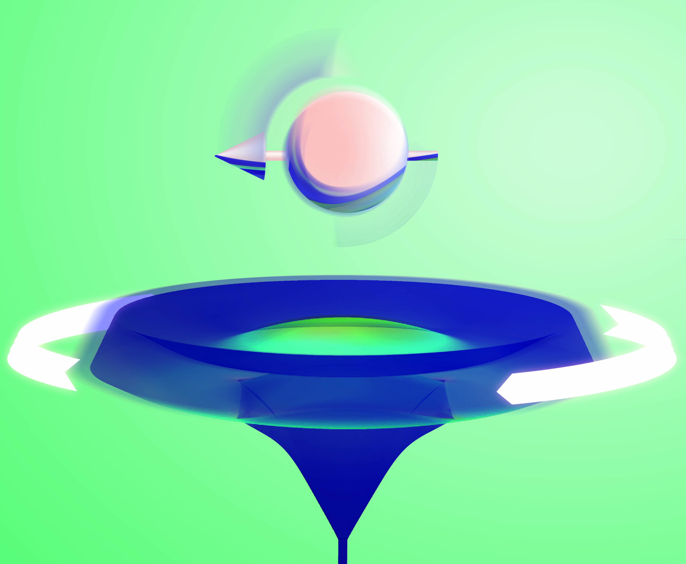
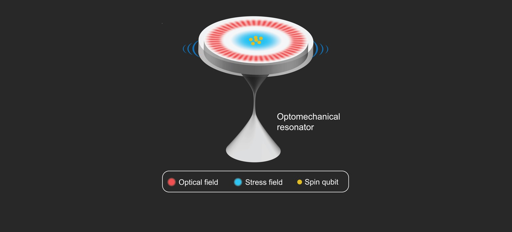
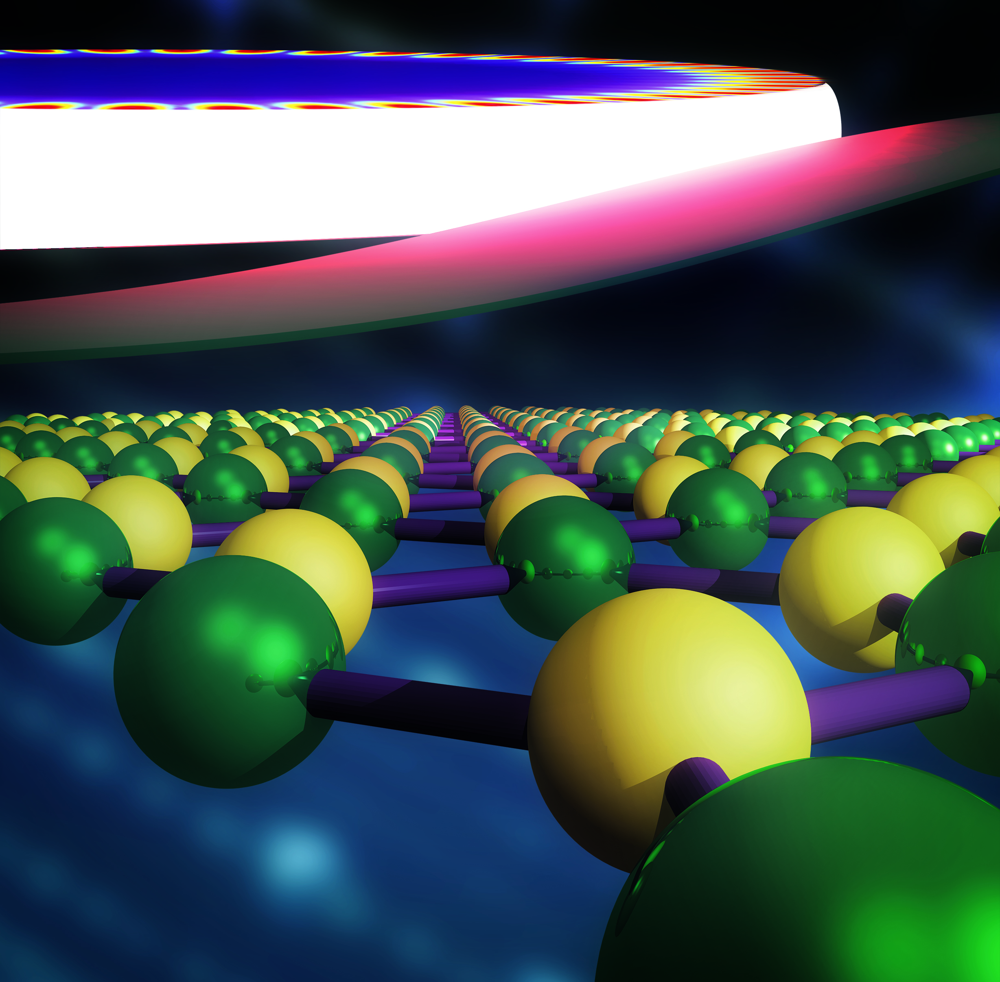

Interests
Apart from being an experimatal researcher, I lead a team of graduate students to promote nanotechnology on campus and province-wide. I have experience managing projects, fundraising, and organizing large scale events such as conferences and networking meetings.
For fun, I like to dabble at cooking, hiking, digital art and photography.
#1 (Oct 2021)

My design interpretation of our work on spin-telecom interface.
#2 (Feb 2021)

First experimental demonstration of telecom photon-spin memory interface using phonons! Read more here: arXiv:2102.04597
#3 (Feb 2021)

Diamond disk of dynamical stress - A nanoscale device for the realization of quantum networks.
#4 (Sep 2020)

My experimental setup of the innermost core of the spin-telecom interface.
#5 (Nov 2019)

My artistic representation of hBN cavity optomechanics.
❮
❯